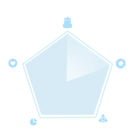
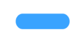

提高通宝分

五个维度的定义
身份：从通讯录基础信息、社会属性、居住环境、稳定性等维度进行考虑
履约：从交易消费行为中的履约度进行评价
资产：从收支情况、信用能力、金融能力等角度对资产进行评估
关系：从通话记录、交易行为等信息中评价有亲密关系的人际网络
偏好：从登陆、浏览、交易等方面对行为和偏好进行量化
-------------------------------------------------------------------------------------------------------
补全公积金

去完成
-------------------------------------------------------------------------------------------------------
补全社保
去完成
-------------------------------------------------------------------------------------------------------